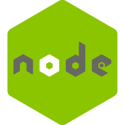

Backend
Allgemein
Was genau bezeichnet man als Backend? Was umfasst das Backend? Und was genau macht ein Backend Entwickler? Das und mehr erfahrt ihr auf unserer Website!
Backend
Was ist das?
Der Begriff Backend beschreibt in der Regel den teil der Applikation mit dem der User nicht in Verbindung kommt. In der Web Entiwcklung zum beispiel handelt es häufig um die Serverseitige logik.
Welche Sprachen werden in der Backend Entwicklung verwendet?
Viele verschiedene Sprachen werden in der Backend Entwicklung verwendet. Je nach Anwednungsfall eignen sich einige Sprachen besser als andere.
Ein Beispiel für ein Python Backend! Beliebte sprachenUnd was ist ein Frontend?
Die andere seite einer Software oder Applikation, die mit welcher der User interagiert, nennt man Frontend. Das Frontend kann dabei direkt mit dem Backend Verbunden sein, wie zum beispiel beim Server Sided Rendering, oder es kann mit einer Schittstelle (API) mit dem Backend verbunden werden. Wir werden uns hier eher mit letzterer Variante auseinander setzen.
Frontend Vs Backend
Fahre mit der Maus über die bilder um die Unterschiede zu erfahren!
Backend
Das Backend ist zuständig für die Datenverarbeitung und die Datenverwaltung. Es werden diverse logische Operationen durchgeführt und Daten in Datenbanken oder im Filesystem gespeichert und abgerufen. Häufig ist ein Backend über eine API mit dem Frontend verbunden.
Frontend
Das Frontend ist der Teil der Seite mit der der User Interagiert. Ein ansprechendes Design und eine leichte Zugänglichkeit sind wichtig. Im Frontend kann zwar auch viel Logik existieren, aber allgemein ist das Frontend zur Anzeige von Daten gedacht.
Beliebte Backend Sprachen
-

Python
Python ist eine Sprache welche bekannt dafür ist keine klammern, sondern Einrückung zu verwenden. Eine der großen Stärken welche Python vorweisen kann ist die Datenverarbeitung und Datenvisualisierung. Eine der größten schwächen ist die Performance. Python gehört zu den langsameren Sprachen für sich genommen. -

Java
Java ist eine weit verbreitete Sprache, welche gerne als beispiel für Objekt Orientierte Programmierung genommen wird. Java wird für die Entwicklung diverser Software Anwendungen und Applikationen verwendetn. Der Vorteil den Java mit sich bringt ist dass Java dank der Java virtual machine, welche den code ausführt, auf allen gänginen Betriebssystemen lauffähig ist. Außerdem macht die relativ strikte struktur die Sprache zu einer perfekten Alternative für Anfänger. -

NodeJS
NodeJS ist eigentlich keine Sprache, sondern eine Runtime Environment. NodeJS erlaubt die Backend programmierung in JavaScript. Das ist einer der Gründe wieos NodeJS unter Web Entwicklern so beliebt ist, da im Frontend und Backend die selbe Sprache verwendet werden kann. Außerdem macht die Non-Blocking Architektur NodeJS zu einer der schnellsten und effizientesten alternativen für I/O Anwendungen. Rechenintensive Aufgaben jedoch können in NodeJS vergleichsweise lange brauchen. -

PHP
Bei PHP handelt es sich um die klassischen Backend Sprache für das Web. Die urpsrüngliche PHP Syntax basiert auf C, hat sich jedoch über die Jahre starkt verändert. Deshalb wird PHP auch als eher unschöne Sprache Wahrgenommen. Weil PHP 5 mittlerweile so alt und Langsam war, und PHP 6 ein debakel war lange die Rede davon dass PHP in Zukunft komplett abgelöst werden wird. PHP 7 jedoch kann durch hohe Geschwindigkeit und stabilität überzeugen. PHP ist eine der schnellsten Backend Sprachen wenn es um den Zugriff auf SQL server geht.
Schnittstellen